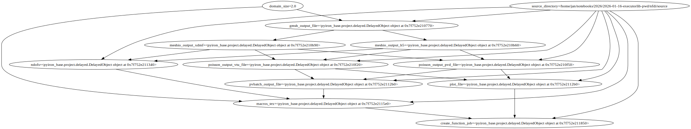
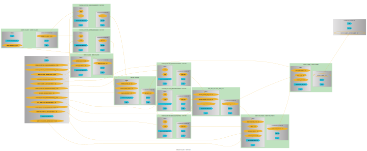

executorlib#
BAMresearch/NFDI4IngScientificWorkflowRequirements
Define workflow with executorlib#
import os
from workflow import generate_mesh, convert_to_xdmf, poisson, plot_over_line, substitute_macros, compile_paper
from executorlib import SingleNodeExecutor, get_item_from_future
domain_size = 2.0
source_directory = os.path.abspath(os.path.join(os.curdir, "source"))
workflow_json_filename = "executorlib_nfdi.json"
with SingleNodeExecutor(export_workflow_filename=workflow_json_filename) as exe:
gmsh_output_file = exe.submit(
generate_mesh,
domain_size=domain_size,
source_directory=source_directory,
)
meshio_output_dict = exe.submit(
convert_to_xdmf,
gmsh_output_file=gmsh_output_file,
)
poisson_dict = exe.submit(
poisson,
meshio_output_xdmf=get_item_from_future(meshio_output_dict, key="xdmf_file"),
meshio_output_h5=get_item_from_future(meshio_output_dict, key="h5_file"),
source_directory=source_directory,
)
pvbatch_output_file = exe.submit(
plot_over_line,
poisson_output_pvd_file=get_item_from_future(poisson_dict, key="pvd_file"),
poisson_output_vtu_file=get_item_from_future(poisson_dict, key="vtu_file"),
source_directory=source_directory,
)
macros_tex_file = exe.submit(
substitute_macros,
pvbatch_output_file=pvbatch_output_file,
ndofs=get_item_from_future(poisson_dict, key="numdofs"),
domain_size=domain_size,
source_directory=source_directory,
)
paper_output = exe.submit(
compile_paper,
macros_tex=macros_tex_file,
plot_file=pvbatch_output_file,
source_directory=source_directory,
)
!cat {workflow_json_filename}
{
"version": "0.1.0",
"nodes": [
{
"id": 0,
"type": "function",
"value": "workflow.generate_mesh"
},
{
"id": 1,
"type": "function",
"value": "workflow.convert_to_xdmf"
},
{
"id": 2,
"type": "function",
"value": "workflow.poisson"
},
{
"id": 3,
"type": "function",
"value": "workflow.plot_over_line"
},
{
"id": 4,
"type": "function",
"value": "workflow.substitute_macros"
},
{
"id": 5,
"type": "function",
"value": "workflow.compile_paper"
},
{
"id": 6,
"type": "input",
"value": 2.0,
"name": "domain_size"
},
{
"id": 7,
"type": "input",
"value": "/home/jan/notebooks/2026/2026-01-16-executorlib-pwd/nfdi/source",
"name": "source_directory"
},
{
"id": 8,
"type": "output",
"name": "result"
}
],
"edges": [
{
"target": 0,
"targetPort": "domain_size",
"source": 6,
"sourcePort": null
},
{
"target": 0,
"targetPort": "source_directory",
"source": 7,
"sourcePort": null
},
{
"target": 1,
"targetPort": "gmsh_output_file",
"source": 0,
"sourcePort": null
},
{
"target": 2,
"targetPort": "meshio_output_xdmf",
"source": 1,
"sourcePort": "xdmf_file"
},
{
"target": 2,
"targetPort": "meshio_output_h5",
"source": 1,
"sourcePort": "h5_file"
},
{
"target": 2,
"targetPort": "source_directory",
"source": 7,
"sourcePort": null
},
{
"target": 3,
"targetPort": "poisson_output_pvd_file",
"source": 2,
"sourcePort": "pvd_file"
},
{
"target": 3,
"targetPort": "poisson_output_vtu_file",
"source": 2,
"sourcePort": "vtu_file"
},
{
"target": 3,
"targetPort": "source_directory",
"source": 7,
"sourcePort": null
},
{
"target": 4,
"targetPort": "pvbatch_output_file",
"source": 3,
"sourcePort": null
},
{
"target": 4,
"targetPort": "ndofs",
"source": 2,
"sourcePort": "numdofs"
},
{
"target": 4,
"targetPort": "domain_size",
"source": 6,
"sourcePort": null
},
{
"target": 4,
"targetPort": "source_directory",
"source": 7,
"sourcePort": null
},
{
"target": 5,
"targetPort": "macros_tex",
"source": 4,
"sourcePort": null
},
{
"target": 5,
"targetPort": "plot_file",
"source": 3,
"sourcePort": null
},
{
"target": 5,
"targetPort": "source_directory",
"source": 7,
"sourcePort": null
},
{
"target": 8,
"targetPort": null,
"source": 5,
"sourcePort": null
}
]
}
Load Workflow with aiida#
from aiida import load_profile
load_profile()
Profile<uuid='c08748df7ab74ec08c14e5f16cebc987' name='pwd'>
from python_workflow_definition.aiida import load_workflow_json
wg = load_workflow_json(file_name=workflow_json_filename)
wg
wg.run()
01/16/2026 08:09:53 AM <39943> aiida.orm.nodes.process.workflow.workchain.WorkChainNode: [REPORT] [1584|WorkGraphEngine|continue_workgraph]: tasks ready to run: generate_mesh
01/16/2026 08:09:56 AM <39943> aiida.orm.nodes.process.workflow.workchain.WorkChainNode: [REPORT] [1584|WorkGraphEngine|update_task_state]: Task: generate_mesh, type: PYFUNCTION, finished.
01/16/2026 08:09:56 AM <39943> aiida.orm.nodes.process.workflow.workchain.WorkChainNode: [REPORT] [1584|WorkGraphEngine|continue_workgraph]: tasks ready to run: convert_to_xdmf
01/16/2026 08:10:00 AM <39943> aiida.orm.nodes.process.workflow.workchain.WorkChainNode: [REPORT] [1584|WorkGraphEngine|update_task_state]: Task: convert_to_xdmf, type: PYFUNCTION, finished.
01/16/2026 08:10:00 AM <39943> aiida.orm.nodes.process.workflow.workchain.WorkChainNode: [REPORT] [1584|WorkGraphEngine|continue_workgraph]: tasks ready to run: poisson
/home/jan/miniforge3/envs/processing/lib/python3.9/site-packages/ufl/__init__.py:250: UserWarning: pkg_resources is deprecated as an API. See https://setuptools.pypa.io/en/latest/pkg_resources.html. The pkg_resources package is slated for removal as early as 2025-11-30. Refrain from using this package or pin to Setuptools<81.
import pkg_resources
01/16/2026 08:10:04 AM <39943> aiida.orm.nodes.process.workflow.workchain.WorkChainNode: [REPORT] [1584|WorkGraphEngine|update_task_state]: Task: poisson, type: PYFUNCTION, finished.
01/16/2026 08:10:05 AM <39943> aiida.orm.nodes.process.workflow.workchain.WorkChainNode: [REPORT] [1584|WorkGraphEngine|continue_workgraph]: tasks ready to run: plot_over_line
01/16/2026 08:10:09 AM <39943> aiida.orm.nodes.process.workflow.workchain.WorkChainNode: [REPORT] [1584|WorkGraphEngine|update_task_state]: Task: plot_over_line, type: PYFUNCTION, finished.
01/16/2026 08:10:09 AM <39943> aiida.orm.nodes.process.workflow.workchain.WorkChainNode: [REPORT] [1584|WorkGraphEngine|continue_workgraph]: tasks ready to run: substitute_macros
01/16/2026 08:10:11 AM <39943> aiida.orm.nodes.process.workflow.workchain.WorkChainNode: [REPORT] [1584|WorkGraphEngine|update_task_state]: Task: substitute_macros, type: PYFUNCTION, finished.
01/16/2026 08:10:11 AM <39943> aiida.orm.nodes.process.workflow.workchain.WorkChainNode: [REPORT] [1584|WorkGraphEngine|continue_workgraph]: tasks ready to run: compile_paper
01/16/2026 08:10:16 AM <39943> aiida.orm.nodes.process.workflow.workchain.WorkChainNode: [REPORT] [1584|WorkGraphEngine|update_task_state]: Task: compile_paper, type: PYFUNCTION, finished.
01/16/2026 08:10:16 AM <39943> aiida.orm.nodes.process.workflow.workchain.WorkChainNode: [REPORT] [1584|WorkGraphEngine|continue_workgraph]: tasks ready to run:
01/16/2026 08:10:16 AM <39943> aiida.orm.nodes.process.workflow.workchain.WorkChainNode: [REPORT] [1584|WorkGraphEngine|finalize]: Finalize workgraph.
{}
Load Workflow with jobflow#
from python_workflow_definition.jobflow import load_workflow_json
from jobflow.managers.local import run_locally
flow = load_workflow_json(file_name=workflow_json_filename)
result = run_locally(flow)
result
2026-01-16 08:10:22,433 INFO Started executing jobs locally
2026-01-16 08:10:22,747 INFO Starting job - generate_mesh (fca356ed-0f12-49aa-90c5-3161982fb757)
2026-01-16 08:10:24,797 INFO Finished job - generate_mesh (fca356ed-0f12-49aa-90c5-3161982fb757)
2026-01-16 08:10:24,797 INFO Starting job - convert_to_xdmf (2be5b5a6-4ba9-4962-b09c-c7565e4655a8)
2026-01-16 08:10:27,186 INFO Finished job - convert_to_xdmf (2be5b5a6-4ba9-4962-b09c-c7565e4655a8)
2026-01-16 08:10:27,186 INFO Starting job - poisson (e539fd0a-4e53-42b4-b79d-9d07a2f602d7)
/home/jan/miniforge3/envs/processing/lib/python3.9/site-packages/ufl/__init__.py:250: UserWarning: pkg_resources is deprecated as an API. See https://setuptools.pypa.io/en/latest/pkg_resources.html. The pkg_resources package is slated for removal as early as 2025-11-30. Refrain from using this package or pin to Setuptools<81.
import pkg_resources
2026-01-16 08:10:30,319 INFO Finished job - poisson (e539fd0a-4e53-42b4-b79d-9d07a2f602d7)
2026-01-16 08:10:30,320 INFO Starting job - plot_over_line (e71edb93-5784-4a14-9cb8-29180644c4e1)
2026-01-16 08:10:33,201 INFO Finished job - plot_over_line (e71edb93-5784-4a14-9cb8-29180644c4e1)
2026-01-16 08:10:33,202 INFO Starting job - substitute_macros (ca231d17-16ce-409c-a4cc-9a3988b7524a)
2026-01-16 08:10:35,251 INFO Finished job - substitute_macros (ca231d17-16ce-409c-a4cc-9a3988b7524a)
2026-01-16 08:10:35,252 INFO Starting job - compile_paper (43798414-e406-411e-9daa-bf1bf3d20c25)
2026-01-16 08:10:39,264 INFO Finished job - compile_paper (43798414-e406-411e-9daa-bf1bf3d20c25)
2026-01-16 08:10:39,265 INFO Finished executing jobs locally
{'fca356ed-0f12-49aa-90c5-3161982fb757': {1: Response(output='/home/jan/notebooks/2026/2026-01-16-executorlib-pwd/nfdi/preprocessing/square.msh', detour=None, addition=None, replace=None, stored_data=None, stop_children=False, stop_jobflow=False, job_dir=PosixPath('/home/jan/notebooks/2026/2026-01-16-executorlib-pwd/nfdi'))},
'2be5b5a6-4ba9-4962-b09c-c7565e4655a8': {1: Response(output={'xdmf_file': '/home/jan/notebooks/2026/2026-01-16-executorlib-pwd/nfdi/preprocessing/square.xdmf', 'h5_file': '/home/jan/notebooks/2026/2026-01-16-executorlib-pwd/nfdi/preprocessing/square.h5'}, detour=None, addition=None, replace=None, stored_data=None, stop_children=False, stop_jobflow=False, job_dir=PosixPath('/home/jan/notebooks/2026/2026-01-16-executorlib-pwd/nfdi'))},
'e539fd0a-4e53-42b4-b79d-9d07a2f602d7': {1: Response(output={'numdofs': 357, 'pvd_file': '/home/jan/notebooks/2026/2026-01-16-executorlib-pwd/nfdi/processing/poisson.pvd', 'vtu_file': '/home/jan/notebooks/2026/2026-01-16-executorlib-pwd/nfdi/processing/poisson000000.vtu'}, detour=None, addition=None, replace=None, stored_data=None, stop_children=False, stop_jobflow=False, job_dir=PosixPath('/home/jan/notebooks/2026/2026-01-16-executorlib-pwd/nfdi'))},
'e71edb93-5784-4a14-9cb8-29180644c4e1': {1: Response(output='/home/jan/notebooks/2026/2026-01-16-executorlib-pwd/nfdi/postprocessing/plotoverline.csv', detour=None, addition=None, replace=None, stored_data=None, stop_children=False, stop_jobflow=False, job_dir=PosixPath('/home/jan/notebooks/2026/2026-01-16-executorlib-pwd/nfdi'))},
'ca231d17-16ce-409c-a4cc-9a3988b7524a': {1: Response(output='/home/jan/notebooks/2026/2026-01-16-executorlib-pwd/nfdi/postprocessing/macros.tex', detour=None, addition=None, replace=None, stored_data=None, stop_children=False, stop_jobflow=False, job_dir=PosixPath('/home/jan/notebooks/2026/2026-01-16-executorlib-pwd/nfdi'))},
'43798414-e406-411e-9daa-bf1bf3d20c25': {1: Response(output='/home/jan/notebooks/2026/2026-01-16-executorlib-pwd/nfdi/postprocessing/paper.pdf', detour=None, addition=None, replace=None, stored_data=None, stop_children=False, stop_jobflow=False, job_dir=PosixPath('/home/jan/notebooks/2026/2026-01-16-executorlib-pwd/nfdi'))}}
Load Workflow with pyiron_base#
from python_workflow_definition.pyiron_base import load_workflow_json
delayed_object_lst = load_workflow_json(file_name=workflow_json_filename)
delayed_object_lst[-1].draw()

delayed_object_lst[-1].pull()
The job generate_mesh_48a36c5747cacb5a404050510014e47e was saved and received the ID: 34
The job convert_to_xdmf_eb9b45572042c1ef8c618184cde64b0d was saved and received the ID: 35
The job poisson_2fd5008b2250fed255cc4f58e009fe7e was saved and received the ID: 36
/home/jan/miniforge3/envs/processing/lib/python3.9/site-packages/ufl/__init__.py:250: UserWarning: pkg_resources is deprecated as an API. See https://setuptools.pypa.io/en/latest/pkg_resources.html. The pkg_resources package is slated for removal as early as 2025-11-30. Refrain from using this package or pin to Setuptools<81.
import pkg_resources
The job plot_over_line_e59dd6066e3aaeb378917024209e71cf was saved and received the ID: 37
The job substitute_macros_317cac7b98bf8b6278cdf40a45350ccb was saved and received the ID: 38
The job compile_paper_32a7807be3644bd018cad61f46ebfb35 was saved and received the ID: 39
'/home/jan/notebooks/2026/2026-01-16-executorlib-pwd/nfdi/postprocessing/paper.pdf'
Load Workflow with pyiron_workflow#
from python_workflow_definition.pyiron_workflow import load_workflow_json
wf = load_workflow_json(file_name=workflow_json_filename)
wf.draw(size=(10,10))

wf.run()
/home/jan/miniforge3/envs/processing/lib/python3.9/site-packages/ufl/__init__.py:250: UserWarning: pkg_resources is deprecated as an API. See https://setuptools.pypa.io/en/latest/pkg_resources.html. The pkg_resources package is slated for removal as early as 2025-11-30. Refrain from using this package or pin to Setuptools<81.
import pkg_resources
{'compile_paper__compile_paper': '/home/jan/notebooks/2026/2026-01-16-executorlib-pwd/nfdi/postprocessing/paper.pdf'}